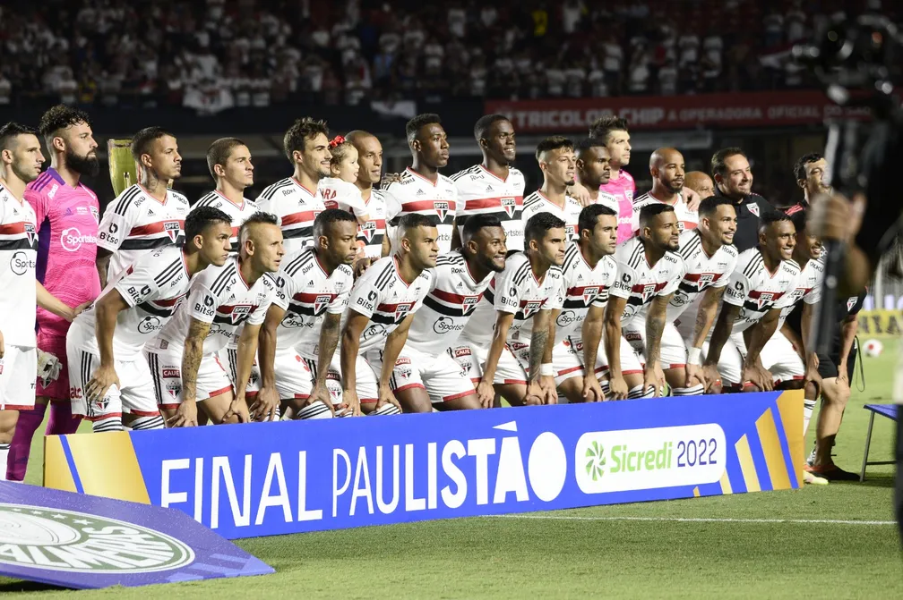

O São Paulo Futebol Clube, mais conhecido como São Paulo FC ou simplesmente São Paulo, é um clube poliesportivo brasileiro da cidade de São Paulo, capital do estado homônimo. Foi fundado em 25 de janeiro de 1930, tendo interrompido suas atividades em maio de 1935, e as retomado em dezembro do mesmo ano
acesse aqui para ver todos os jogadores de Sao Paulo futebol clube AQUI
